library(tidyverse)
library(palmerpenguins)2 Session 2: Data visualization basics
Objectives
- Appreciate the importance of visualization. A simple graph can convey more information than any other device. You will learn how the grammar of graphics underlies ggplot2.
- Create basic plots. Use
ggplot2to draw scatterplots, bar charts, histograms and boxplots. - Understand variable types. Recognize when to use different plot types based on whether variables are categorical or numeric.
- Recognize a few ways plots can mislead. Sometimes this happens by accident, and sometimes it happens on purpose. Every plot you make is a claim about the data; part of learning to build plots is learning to read them critically.
- Prepare for layering. Today’s material sets the stage for Session 3 on layering, where you’ll add geoms, adjust positions and facet plots.
Notes
Why use ggplot2? The grammar of graphics
R has several systems for making graphs, but ggplot2 is one of the most elegant and versatile. It implements the grammar of graphics, a coherent system for describing and building graphs out of independent building blocks, rather than memorizing one function per chart type. Learning this grammar enables you to create a wide range of plots with consistent syntax.
Every ggplot2 plot needs at minimum three things:
- Data: a data frame (or tibble) containing the variables you want to plot.
- Aesthetic mappings (
aes()): these describe which variable controls which visual property, such as x position, y position, color, shape, size, or transparency (alpha). - A geometric object (a
geom_*()function): the actual visual mark used to represent each observation, such as points, bars, lines, or boxes.
You combine these pieces with +, and ggplot2 handles the (surprisingly hard) work of choosing scales, drawing axes, and building a legend.
Anatomy of a ggplot2 call
ggplot(data = penguins, mapping = aes(x = flipper_length_mm, y = body_mass_g)) +
geom_point()
Because data and mapping are almost always the first two arguments, ggplot2 lets you drop the argument names once you’re comfortable with the order:
ggplot(penguins, aes(x = flipper_length_mm, y = body_mass_g)) +
geom_point()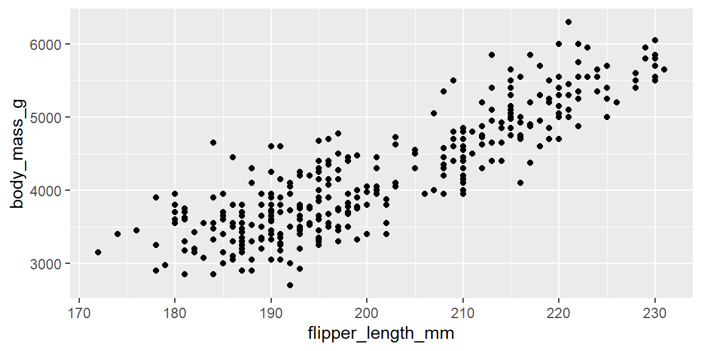
Aesthetic mappings can live in two places, and where you put them matters:
- Global: placed inside
ggplot(aes(...)), it applies to every geom layer in the plot. - Local: placed inside a specific
geom_*(aes(...)), it applies only to that layer.
# global: every layer (here, just the points) uses species for color
ggplot(penguins, aes(x = flipper_length_mm, y = body_mass_g, color = species)) +
geom_point()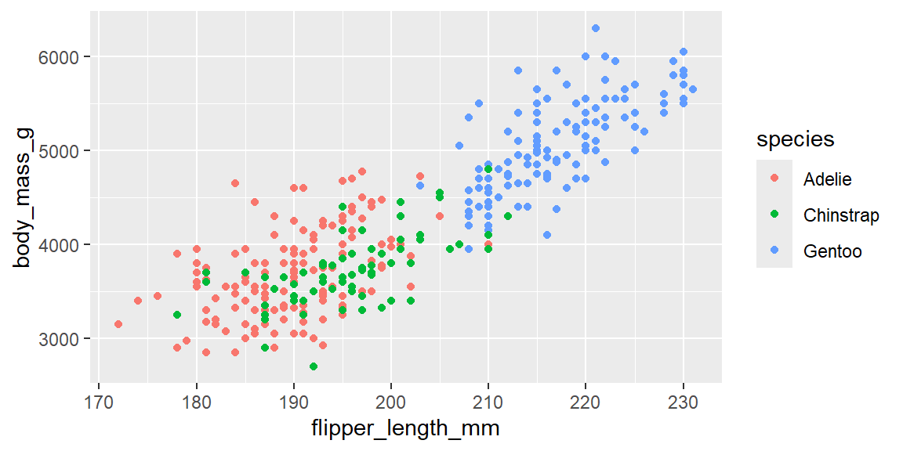
# local: only this geom_point layer uses species for color;
# a geom_smooth() added afterward would draw one line for everybody, not one per species
ggplot(penguins, aes(x = flipper_length_mm, y = body_mass_g)) +
geom_point(aes(color = species)) +
geom_smooth(method = "lm")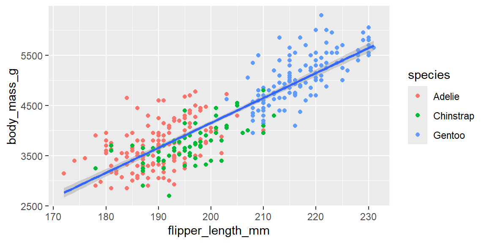
Note
+ goes at the end of the line, never the start
ggplot2 builds plots by adding layers together, and R needs to see the + before it reaches the end of a line to know that more code is coming.
# broken: R sees a complete expression on line 1 and stops there,
# then reports a syntax error when it hits a lone "+ geom_point()" on its own line
ggplot(penguins, aes(x = flipper_length_mm, y = body_mass_g))
+ geom_point()# fixed: the + is at the end of the first line, so R knows to keep reading
ggplot(penguins, aes(x = flipper_length_mm, y = body_mass_g)) +
geom_point()This is the single most common syntax error beginners hit with ggplot2. If your plot silently does nothing, or you get an “unexpected +” style error, check where your + signs are sitting first.
Visualizing a single categorical variable
Bar charts display the distribution of a categorical variable. For example, they can count penguins by species. geom_bar() counts observations for you; you never need to compute the counts yourself first.
ggplot(penguins, aes(x = species)) +
geom_bar()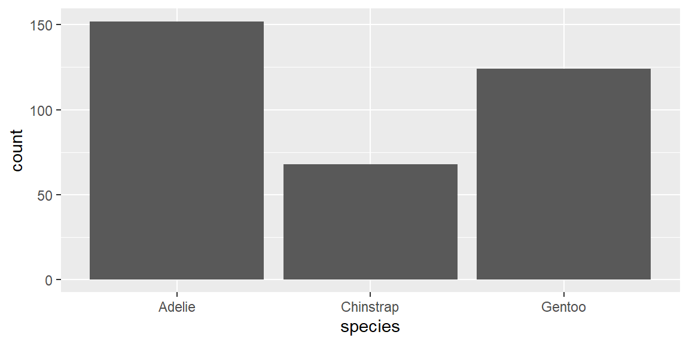
TipOrder your bars on purpose
By default, geom_bar() orders a character or categorical x-axis alphabetically, which is rarely the most informative order. forcats::fct_infreq() reorders the categories by how often they occur, so the tallest bar comes first:
ggplot(penguins, aes(x = fct_infreq(species))) +
geom_bar() +
labs(x = "species")
We will cover forcats and factor reordering in much more depth in a later session; file this away as a preview.
Visualizing a single numeric variable
Histograms reveal the distribution of a numeric variable by cutting its range into equal width bins and counting how many observations fall in each. Choose a bin width that balances detail with clarity. Too wide, and you hide real structure; too narrow, and you’re mostly looking at random noise (see Example 2.3 below).
Let’s bring in a dataset from outside palmerpenguins for practice: minutes patients waited in a (simulated) hospital emergency department.
wait_times <- read_csv("data/hospital_wait_times.csv")
ggplot(wait_times, aes(x = wait_minutes)) +
geom_histogram(binwidth = 10)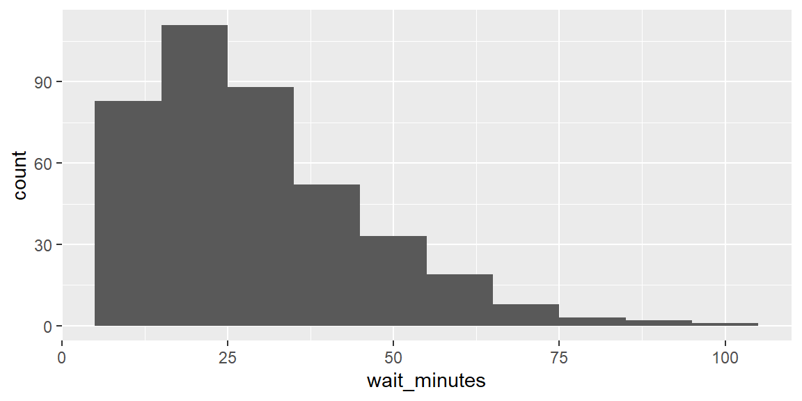
geom_density() shows the same kind of information as a smooth curve instead of discrete bars, which can make the overall shape easier to see at a glance, at the cost of hiding the exact bin counts:
ggplot(wait_times, aes(x = wait_minutes)) +
geom_density()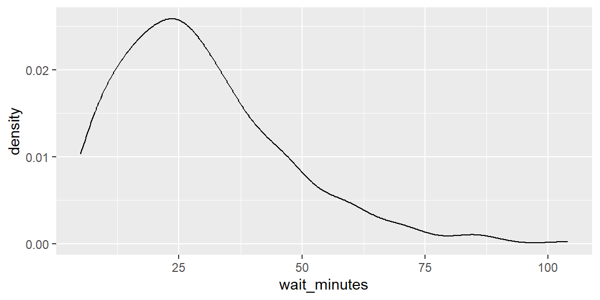
Visualizing relationships between two variables
The right plot depends on the types of the two variables involved.
Numeric vs. categorical: a boxplot compares the distribution of a numeric variable across levels of a categorical variable. Here we compare reported study hours across college majors, using a small simulated survey of students:
stress <- read_csv("data/student_stress_survey.csv")
ggplot(stress, aes(x = major, y = study_hours)) +
geom_boxplot()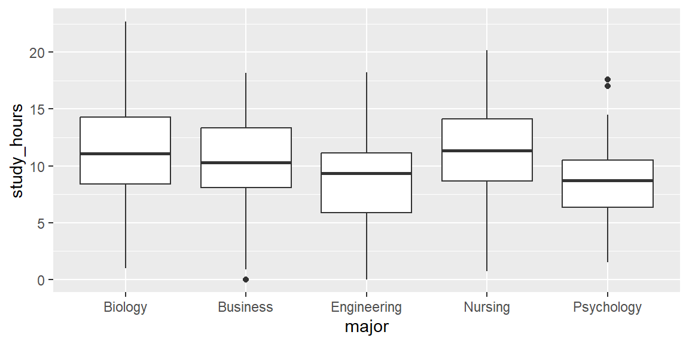
Categorical vs. categorical: a stacked bar chart (mapping the second variable to fill) shows how two categorical variables relate. Setting position = "fill" rescales every bar to the same height, turning raw counts into proportions, which is usually the more honest comparison when group sizes differ:
vaccine <- read_csv("data/vaccine_opinion_by_age.csv")
ggplot(vaccine, aes(x = age_group, fill = opinion)) +
geom_bar() # raw counts per age group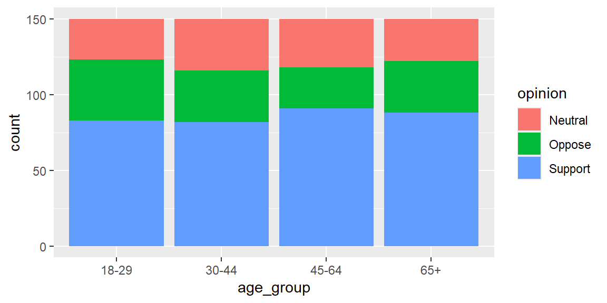
ggplot(vaccine, aes(x = age_group, fill = opinion)) +
geom_bar(position = "fill") + # proportions within each age group
labs(y = "proportion")Numeric vs. numeric: back to the scatterplot we started with. Plotting penguin flipper length vs. body mass can reveal whether larger penguins tend to have longer flippers. Map species or island to color or shape to uncover additional structure, and add alpha when points overlap heavily.
Three or more variables: once you’ve mapped x, y, and color or shape, you can split the plot into a grid of subplots, one per category, using facet_wrap():
ggplot(penguins, aes(x = flipper_length_mm, y = body_mass_g, color = species)) +
geom_point(alpha = 0.7) +
facet_wrap(~island)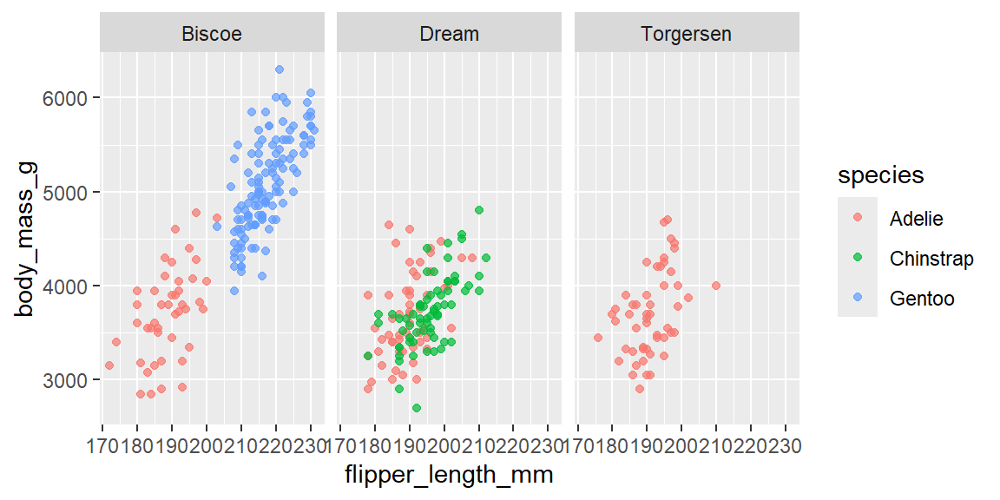
TipFighting overplotting
When an x-axis variable only takes a handful of distinct values (like stress_level on a scale from 1 to 5), a scatterplot can hide dozens of points stacked exactly on top of each other. geom_jitter() adds a small amount of random noise to each point’s position, purely for visibility. It doesn’t change the underlying data, only how it’s drawn:
ggplot(stress, aes(x = study_hours, y = stress_level)) +
geom_jitter(height = 0.2, alpha = 0.6)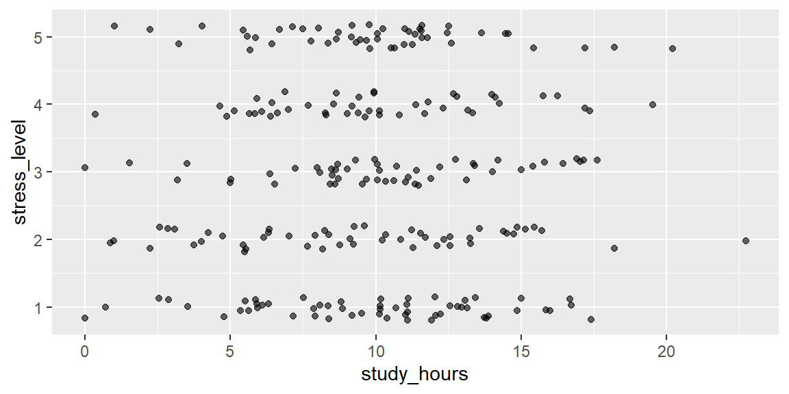
Compare that to plain geom_point() on the same data, and count how many points seem to disappear.
Be sure to label axes and titles with labs(), choose appropriate scales, and consider transparency (alpha) to reduce overplotting.
Saving your plots
Once you’re happy with a plot, save it with ggsave() rather than right clicking the Plots pane:
p <- ggplot(penguins, aes(x = flipper_length_mm, y = body_mass_g)) +
geom_point()
ggsave("penguin-scatterplot.png", plot = p, width = 6, height = 4)
TipPick your file format on purpose
ggsave() infers the format from the file extension. Use a raster format (.png) for plots you’ll paste into slides or a web page, since they’re small and load fast. Use a vector format (.pdf or .svg) for anything destined for print or that you might need to zoom into, since vector graphics never get blurry no matter how much you scale them.
Fringe cases and common pitfalls
R4DS’s data visualization chapter gets you plotting quickly, but a handful of ggplot2’s default behaviors are easy to miss on a first read, and each one has caused a real analysis to reach the wrong conclusion at some point.
ExampleExample 2.1
Missing values vanish quietly, with only a warning.
The penguins data frame has a few birds with missing measurements. Watch what happens when we plot one of the affected columns and force the usual warning back on:
sum(is.na(penguins$bill_depth_mm)) # how many rows are affected?[1] 2ggplot(penguins, aes(x = bill_depth_mm, y = bill_length_mm)) +
geom_point()Warning: Removed 2 rows containing missing values or values outside the scale range
(`geom_point()`).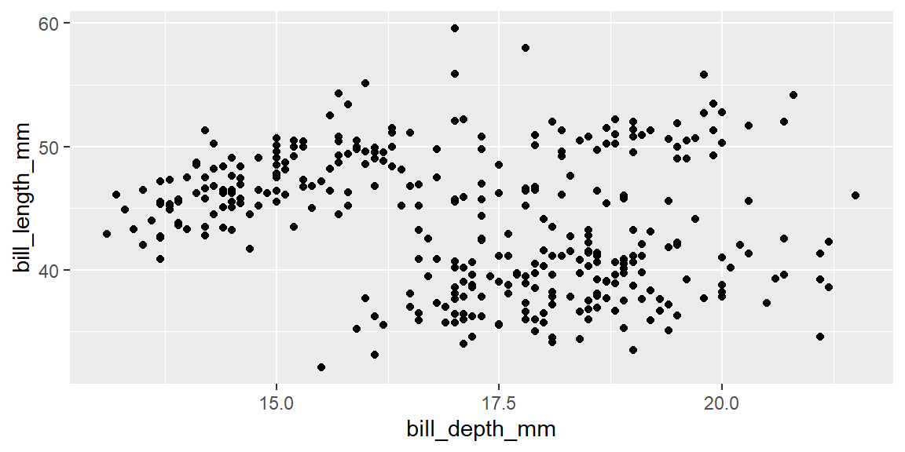
ggplot2 does not error out. It just drops the incomplete rows and tells you so in a warning: “Removed n rows containing missing values.” If that warning scrolls by unread (or is suppressed, as it is by default in this book’s _quarto.yml), you can end up interpreting a plot of, say, 342 penguins as if it represented all 344, without ever realizing two were silently excluded. Always check sum(is.na(...)) on the variables you’re about to plot before you trust the picture.
ExampleExample 2.2
A number is not automatically treated as a category.
stress_level in our student survey is recorded as an integer from 1 to 5. If you map it to color directly, ggplot2 assumes it is a continuous measurement and draws a smooth color gradient with a colorbar legend, not five distinct colors:
ggplot(stress, aes(x = study_hours, y = major, color = stress_level)) +
geom_jitter(height = 0.2)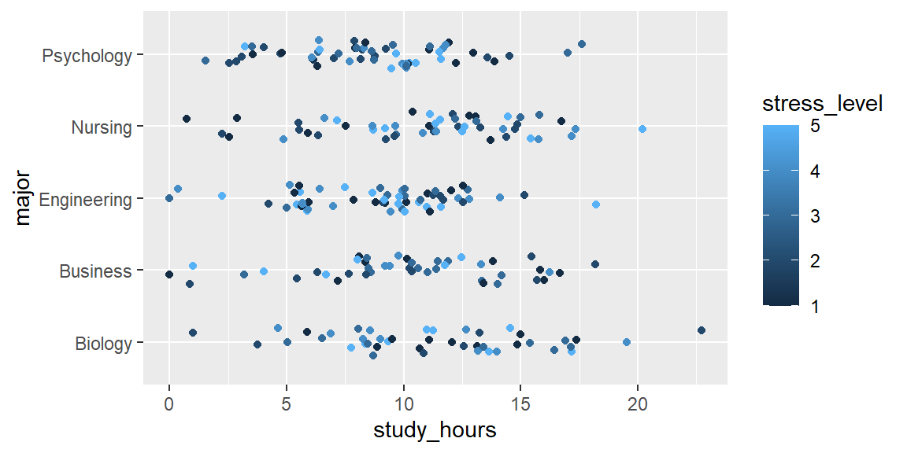
Wrapping the variable in factor() tells ggplot2 to treat each integer as its own discrete category instead, which produces five distinct colors and a discrete legend:
ggplot(stress, aes(x = study_hours, y = major, color = factor(stress_level))) +
geom_jitter(height = 0.2) +
labs(color = "stress_level")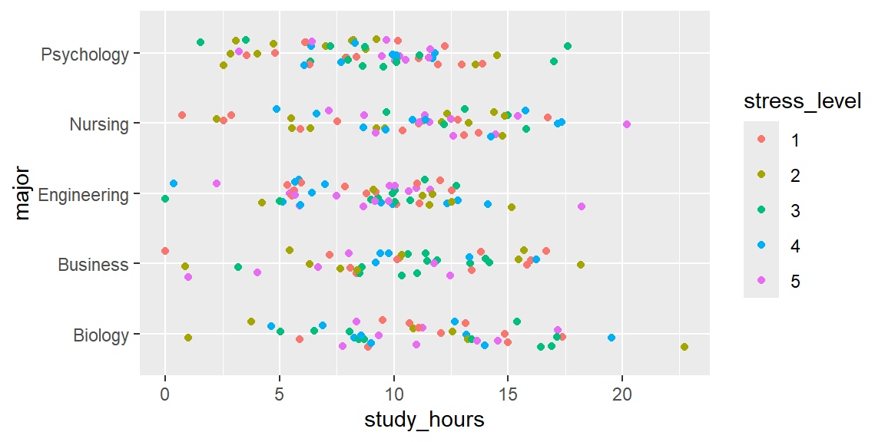
The underlying data never changed; only the way ggplot2 was told to interpret it did. Whenever a legend looks like a continuous gradient but you expected discrete groups, this is the first thing to check.
ExampleExample 2.3
Bin width can manufacture a pattern that isn’t really there.
The exact same wait_minutes data can look unimodal, lumpy, or almost uniform depending purely on the bin width you choose:
ggplot(wait_times, aes(x = wait_minutes)) +
geom_histogram(binwidth = 30) +
labs(title = "binwidth = 30: looks like one smooth hump")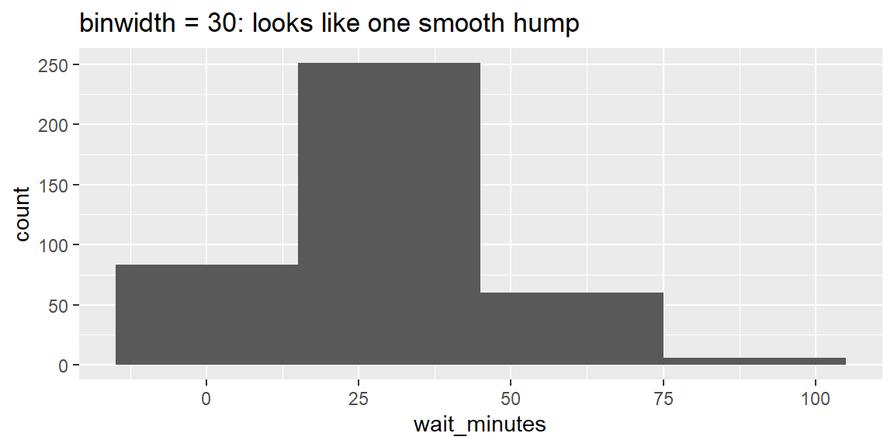
ggplot(wait_times, aes(x = wait_minutes)) +
geom_histogram(binwidth = 5) +
labs(title = "binwidth = 5: same data, bumpier story")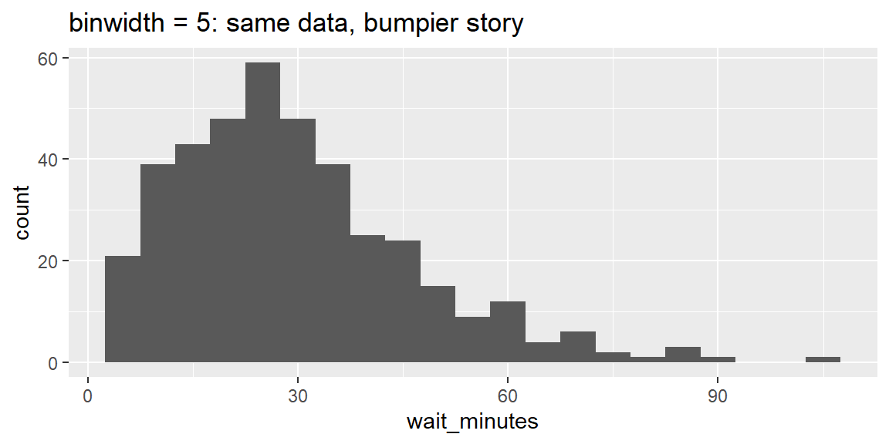
ggplot(wait_times, aes(x = wait_minutes)) +
geom_histogram(binwidth = 1) +
labs(title = "binwidth = 1: mostly noise now")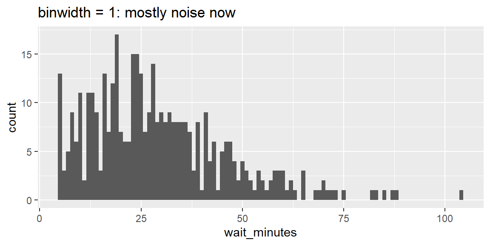
None of these three plots is “the wrong one,” but none of them alone is “the truth” either. Always try a few different bin widths before drawing a conclusion about a distribution’s shape, and say what bin width you used when you report a histogram to someone else.
ExampleExample 2.4
Truncating the y-axis can manufacture a crisis (or a triumph) out of noise.
Here is a real (simulated) two year run of monthly retail sales, in thousands of dollars:
sales <- read_csv("data/retail_sales.csv")
ggplot(sales, aes(x = month, y = sales_k)) +
geom_col(fill = "steelblue") +
coord_cartesian(ylim = c(75, 95)) +
labs(title = "Sales are swinging wildly!", y = "sales ($k)") +
theme(axis.text.x = element_text(angle = 90, size = 6))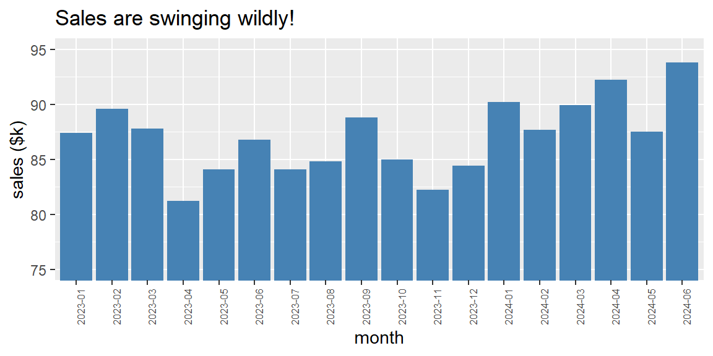
Starting the y-axis near the data’s minimum, rather than at zero, visually exaggerates every small month to month wiggle. Compare that to the same data with the axis anchored at zero:
ggplot(sales, aes(x = month, y = sales_k)) +
geom_col(fill = "steelblue") +
coord_cartesian(ylim = c(0, 100)) +
labs(title = "The same 18 months, honestly scaled", y = "sales ($k)") +
theme(axis.text.x = element_text(angle = 90, size = 6))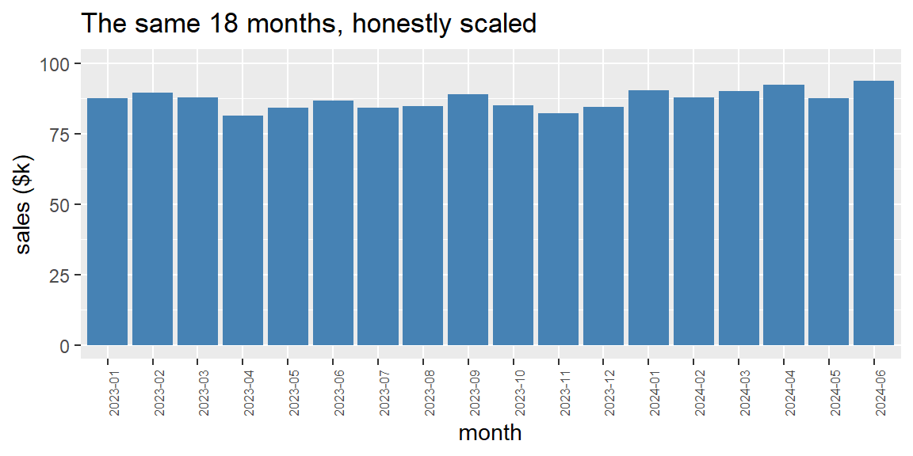
Both charts are drawn from identical numbers. Bar charts in particular imply that height represents the full magnitude of a quantity, so a truncated y-axis on a bar chart is one of the most common (and most misleading) tricks in bad data journalism and marketing decks alike. When you see a dramatic looking bar chart, check the y-axis before you believe the drama.
Recap
| Term | Definition |
|---|---|
| Grammar of graphics | The idea that any plot can be built from independent pieces: data, aesthetic mappings, and geoms. |
Aesthetic mapping (aes()) |
Connects a variable in your data to a visual property (x, y, color, shape, size, alpha). |
| Geom | The geometric object (geom_point(), geom_bar(), geom_histogram(), geom_boxplot(), and so on) used to represent each observation. |
| Global vs. local mapping | An aes() inside ggplot() applies to every layer; an aes() inside a specific geom_*() applies only to that layer. |
| Bar chart | Shows the distribution (counts) of a single categorical variable. |
| Histogram | Shows the distribution of a single numeric variable by counting observations in equal width bins. |
| Binwidth | The width of each bin in a histogram; changing it can change the apparent shape of a distribution. |
| Boxplot | Compares the distribution of a numeric variable across levels of a categorical variable. |
position = "fill" |
Rescales stacked bars to the same height so they show proportions rather than raw counts. |
facet_wrap() |
Splits one plot into a grid of subplots, one per level of a categorical variable. |
| Overplotting | When many points are drawn on top of each other, hiding how much data is really there; mitigated with alpha or geom_jitter(). |
| Truncated axis | An axis that doesn’t start at a natural baseline (usually zero); can visually exaggerate small differences, especially on bar charts. |
Check your understanding
NoteProblems
What are the three components every ggplot2 plot needs at minimum? Give an example of each using the
penguinsscatterplot from this session.You write the following code and get a syntax error:
ggplot(penguins, aes(x = species)) + geom_bar()What is wrong, and how do you fix it?
A classmate maps a satisfaction rating from 1 to 5 to
colorin a scatterplot and gets a smooth blue to yellow gradient legend instead of five distinct colors. What happened, and how would you fix their code?You plot a histogram of exam scores with
binwidth = 1and it looks like noisy static. Does that mean the data has no real pattern? What should you try next?A coworker shows you a bar chart with the title “Revenue has TRIPLED this quarter!” where the y-axis runs from 240 to 250. What should you check before believing the headline?
TipSolutions
Every plot needs data (a data frame, e.g.
penguins), an aesthetic mapping (aes(x = flipper_length_mm, y = body_mass_g), linking variables to the x and y positions), and a geom (geom_point(), the visual mark used to draw each observation).The
+is at the start of the second line instead of the end of the first line. R considersggplot(penguins, aes(x = species))a complete, runnable expression on its own, so it stops there and then chokes on a line that begins with+ geom_bar(). The fix is to move the+to the end of the first line:ggplot(penguins, aes(x = species)) +on one line,geom_bar()on the next.They mapped a numeric column directly to
color, so ggplot2 assumed it was a continuous measurement and drew a gradient. Wrapping it infactor(), as inaes(color = factor(rating)), tells ggplot2 to treat each rating as a discrete category, producing five distinct colors and a discrete legend instead.No, it means the bin width is too narrow relative to the natural variability in the data, so each bin is mostly capturing random noise rather than the underlying shape. Try several wider bin widths (for example, 5, 10, or 30) and compare; the “right” bin width is often a range of reasonable choices rather than a single correct number.
Check where the y-axis actually starts. Since it doesn’t start at zero (here, it starts at 240, not far below the smallest value being plotted), even a tiny absolute change can be stretched to fill the entire height of the chart, making a small change look dramatic. Ask to see the same chart with the y-axis starting at zero before drawing any conclusions.